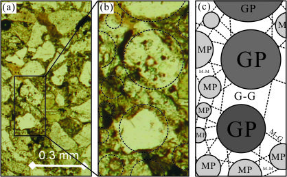

研究方向
本研究室的工作環繞四個彼此相連的主題：從岩石材料的力學行為出發，以數值分析作為探究工具，透過工程地質掌握現地條件，最終回饋到大地與資源工程的實務。
岩石力學
岩石為天然產物，力學行為迥異於一般常見人造材料。從微觀角度出發，岩石材料的晶粒排列影響了受力後的裂紋發展；自巨觀角度審視，岩體的節理面分布對其穩定性及工程行為有重大影響。因此，探討岩石的力學行為，為本研究室的核心目標。

數值分析
離散元素法(Discrete element method)是一個新興的數值分析工具，最初由Cundall於1971年提出，用以分析岩石塊體的漸進式破壞問題。離散元素法透過力－位移關係計算元素的運動行為，分析顆粒間交互作用及影響，藉以探討研究人員感興趣的課題。其應用範圍極廣，透過鍵結模式的設定與否，兼具可模擬連續塊體及離散塊體之特性，可探討的問題概分為顆粒材料運動行為、承載力及破裂行為、塊體高度摩擦之力學行為，以及綜合兩種以上特性之複雜問題。

顆粒界面模式 PIM
「界面」泛指任何固體間的接觸面，不僅限於節理或劈理等地質弱面。在岩體工程中，界面的力學性質主控了岩體的穩定性。然而目前離散元素法中最先進之界面模式－平滑節理模式，因未考慮顆粒受剪時之幾何排列與參數關係，無法提供準確的界面力學行為模擬結果。
為解決此問題，本團隊考慮了顆粒群受剪時之接觸與分離特性，納入多項修正計算，並將工程界最常使用的 Mohr-Coulomb 及 Barton-Bandis 兩種破壞準則納入模式中，開發出顆粒界面模式(Particulate Interface Model，PIM)。PIM 所使用的輸入參數可直接採用實驗室實驗資料而無須進行反算或修改，提升了離散元素法用於預測岩石工程災害之可能性。

雙凹鍵結模式
不同於土壤，岩石材料具有相當高的凝聚力，晶粒間膠結性質為影響其力學行為中之重要因子。在觀察岩材薄片的過程中，我們發現晶粒間膠結形式近似於雙凹形狀，因此發展了雙凹鍵結模式(Biconcave bond model)。
以雙凹鍵結模式模擬幾何及組構已知之試體時，所使用的微觀材料參數較接近實驗室試驗所得之數值，顯示以微觀材料參數與試體組構預測巨觀力學行為時，雙凹鍵結模式之表現較佳。


節理岩體模擬
我們常認為大地工程周遭的岩石是堅固的基盤，並假設其力學性質為均質均向。這種觀點對於完整岩塊或很破碎的岩體而言是合適的，然而當岩體含有一組或多組以上的節理面時，其力學行為便具有異向性，強度及變形性隨方向而異，十分複雜。因此節理岩體在工程設計上的難度相當高，這也是岩體工程最主要的挑戰之一。


工程地質
大地工程必須在天然材料如岩石及土壤上興建，而天然材料的特性千變萬化，若想在自然界進行雕塑，就必須先了解地質。因此，大地工程與地質科學的橋梁－工程地質，為十分重要的研究議題。
本研究室所著重的工程地質領域包括現地調查、工程地質資訊蒐集以及資料庫建置。現地調查包含節理岩體之不連續面位態調查、岩體評分及岩石材料強度初估等。工程地質資訊蒐集方面，我們希望尋找全台不同區域的工程資料，進行岩石材料及節理面力學性質的彙整，分析後建置工程地質資料庫，作為設計及施工單位初步的參考依據。

大地與資源工程
大地工程包含的範疇很大，凡舉基礎開挖、邊坡穩定、大壩分析、隧道開挖、崩塌地調查治理等，均屬於大地工程的一部分。每個領域都與人民的生活息息相關，是與社會高度連結的產業。「所有的建設，都要透過大地工程建立基礎。蓋台北一零一需先打設基樁，興建高鐵前要先治理邊坡與挖掘隧道。我們可以算是臺灣重大建設的先鋒部隊。」不僅如此，大地工程學的技術及理論，也與資源開採及地質調查等相關領域息息相關。
對於大地與資源組而言，臺灣非常值得發掘。我們有多元的地質環境，小小一個臺灣島就擁有各式各樣的構造及岩性；我們也有極具特色的石礦產業，不論是開採或是加工，臺灣的技術都相當進步；由於年輕脆弱的地質條件，加上高強度的降雨及地震，大地工程及防災上的人才需求量十分龐大。